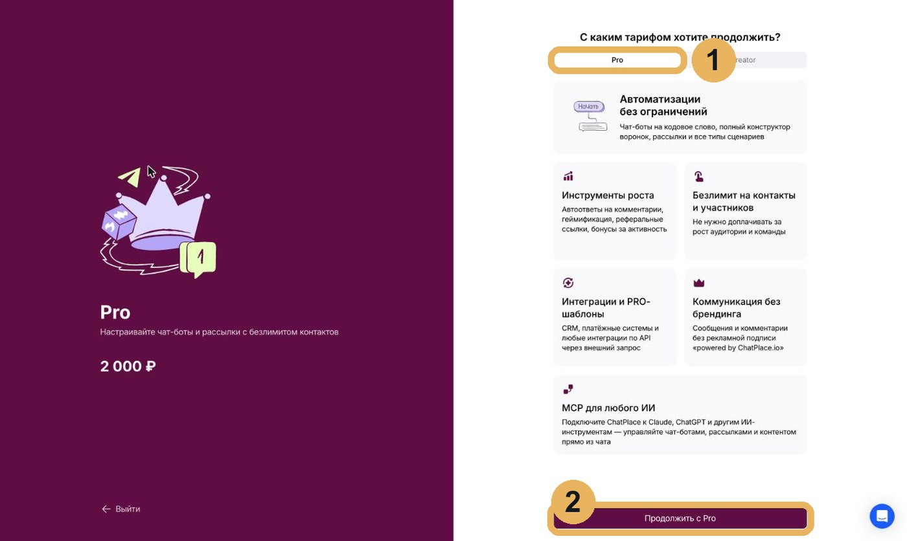
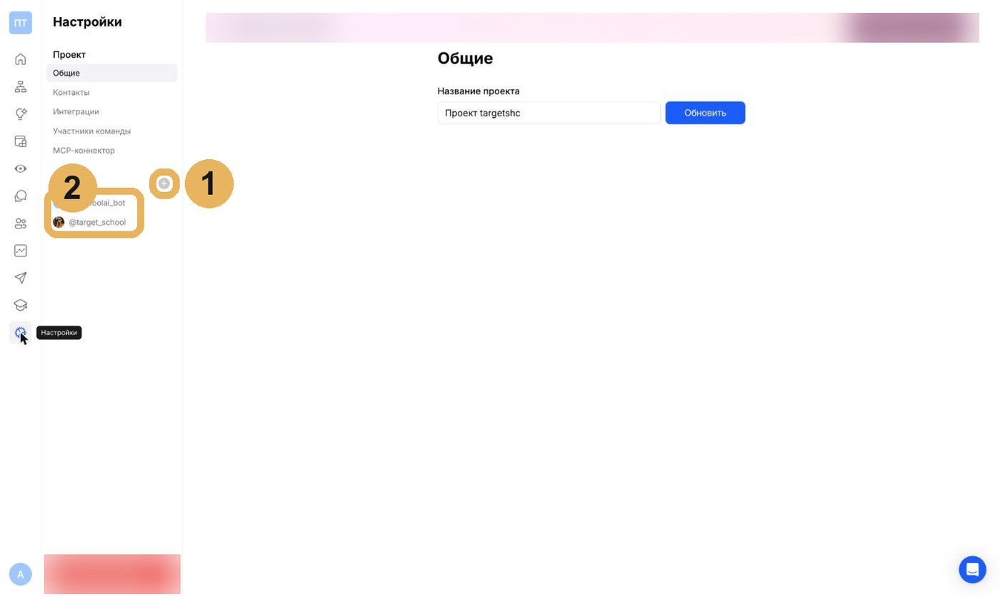
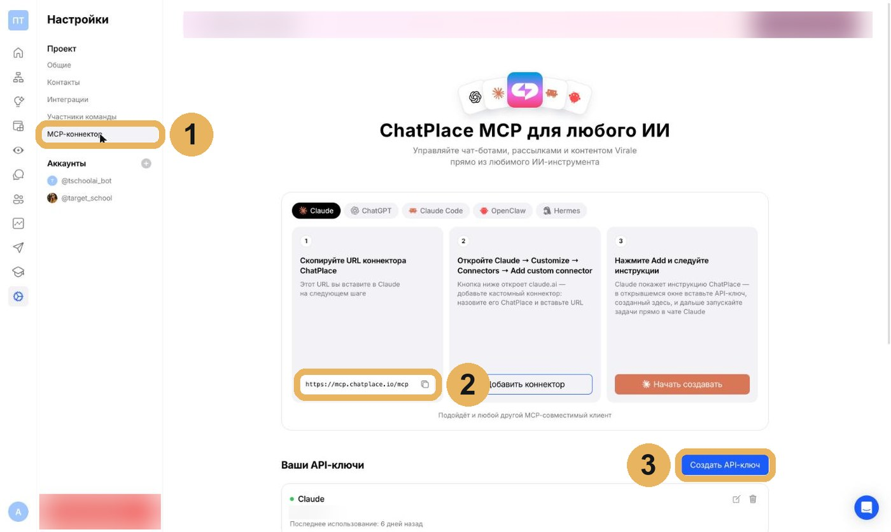
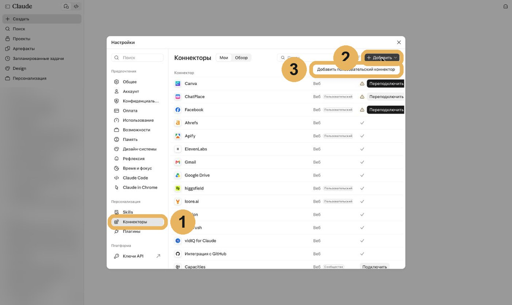
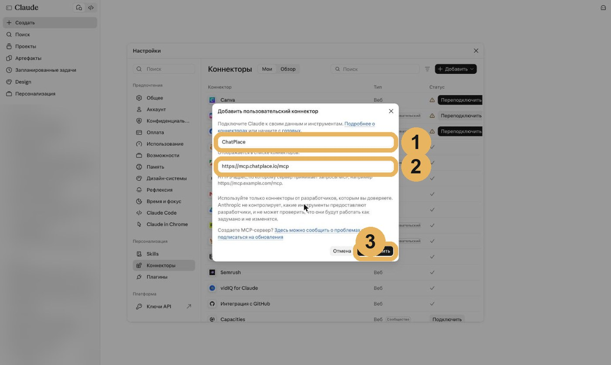

Хочу как у Анастасииинструкция
Модуль 3.1
Подключаем ChatPlace: по шагам
Всё, что в видео показано быстро, здесь по шагам и со скринами. Идите сверху вниз, на каждом шаге сверяйтесь с картинкой.
ПонадобитсяАккаунт в ChatPlace, своя соцсеть, Telegram-бот (его создают в @BotFather, ChatPlace подскажет) и проект в Claude с проводником.
1
Выберите тариф ChatPlace
ChatPlace платный, для начала хватает тарифа Pro (1). Выберите его и нажмите «Продолжить с Pro» (2). Цену проверьте на сайте сервиса в день оплаты.

Должны увидеть: тариф активен, в настройках нет плашки «Подписка закончилась».
2
Подключите соцсеть и Telegram-бот
Слева внизу откройте «Настройки», значок шестерёнки. В блоке «Аккаунты» нажмите плюс (1) и подключите по очереди свою соцсеть и Telegram-бот. Если аккаунты по тарифу уже заняты, ChatPlace до списания покажет сумму за дополнительный аккаунт: проверьте, что подключаете нужное. Подключённые аккаунты появятся в списке (2).

Должны увидеть: в блоке «Аккаунты» стоят Ваша соцсеть и Ваш бот.
3
Скопируйте адрес коннектора и создайте ключ
В тех же настройках откройте «MCP-коннектор» (1). Скопируйте адрес коннектора кнопкой рядом с ним (2). Ниже нажмите «Создать API-ключ» (3) и сохраните ключ: он понадобится на шаге 5.

Должны увидеть: адрес https://mcp.chatplace.io/mcp скопирован, ключ сохранён у Вас.
Не получилось: ключ никому не пересылайте и не вставляйте в чат. Он нужен только в окне коннектора в Claude.
4
Откройте коннекторы в Claude
В Claude нажмите на своё имя внизу слева и откройте «Настройки», затем «Коннекторы» (1). Справа сверху нажмите «Добавить» (2) и выберите «Добавить пользовательский коннектор» (3).

Должны увидеть: открылось окно «Добавить пользовательский коннектор».
5
Впишите имя и адрес
В поле «Имя» напишите ChatPlace (1). В поле адреса вставьте скопированный адрес коннектора (2). Нажмите «Продолжить» (3). Откроется окно ChatPlace: вставьте туда API-ключ из шага 3 и подтвердите.

Должны увидеть: ChatPlace появился в списке коннекторов с галочкой.
Не получилось: на бесплатном тарифе Claude свой коннектор один. Если место занято, удалите лишний коннектор в том же списке.
6
Проверьте связь через проводника
В чате проекта напишите проводнику «Делаем модуль «Подключаем ChatPlace»». Он попросит Claude показать список Ваших автоматизаций.
Должны увидеть: Claude показал список автоматизаций. Пустой список тоже подходит: связь есть, воронки соберём дальше.
Не получилось: Claude пишет, что не видит ChatPlace? Под полем ввода нажмите плюс, «Коннекторы» и включите ChatPlace для этого чата.